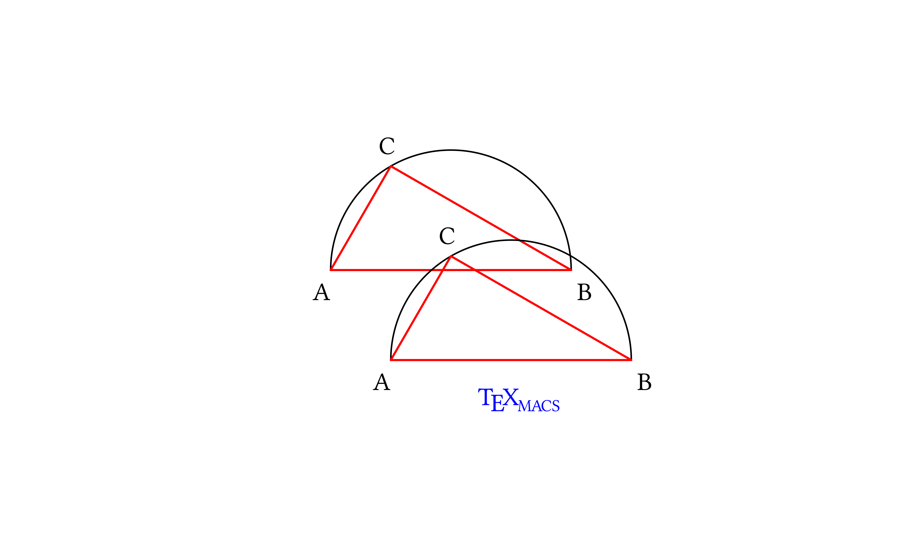

[main]Notes on TeXmacs
[main]Notes on TeXmacs
 [main]Notes on TeXmacs
[main]Notes on TeXmacs
This post is a part of a series of
Like in the other posts of the series, we assume that the reader is
familiar with simple Scheme syntax. We link again to the
TeXmacs graphics provide a set of elementary objects (points, polylines, splines and so on). It would be nice to have at hand functions to deal with complex objects, which can be seen as unions of elementary objects: for example, a triangle in a half-circle is the union of a polyline (to represent the triangle) with the half-circle, which in turn is the union of a polyline (the diameter of the half-circle) and an arc.
We would like to name complex objects and to transform them as units: for example translate them or change the line style or the color for all of the object components; naming complex objects will make our code clearer when we deal with them—and for example we use them as building blocks of even more complex objects.
In TeXmacs there is a partially-implemented interface for dealing with
complex graphics objects (see
In this post, we will develop a small interface of our own; we will show how to compose and use in a drawing complex graphical objects, how to shift them and how to set properties of already-existing complex objects.
In
The input for graphics in TeXmacs
One possible way to turn an arbitrarily nested list of elementary objects (a complex object, that is) into the flat list of lists that TeXmacs expects is flattening it recursively, stopping the recursive flattening every time we find one of the symbols that indicate the start of a graphical object (including the symbol with).
The following group of three functions does that. The main function is adapted from one of the answers to this Stack Overflow question.
denest-test is a test to stop denestification when one finds one of the symbols in the list objects-list or the symbol with.
We build it up from an object-test, which check membership in object-list. object-test itself will help later too, in a function that applies properties to all of the elementary components of an object.
| Scheme] |
(define objects-list '(point line cline spline arc
carc text-at math-at document-at)) |
| Scheme] |
(define (object-test expr) (not (equal?
(filter (lambda (x) (equal? x expr)) objects-list)
'()))) |
| Scheme] | (define (denest-test expr) (or (object-test expr) (equal? expr 'with))) |
denestify-conditional flattens a list recursively, stopping the recursion if it meets one of the symbols in objects-list or the symbol with.
denestify-conditional is not tail-recursive; we write it in this way as it is simpler than the tail-recursive version and it will work fairly, as in these examples we will apply it to short lists.
A tail-recursive version of the function is given in another answer to the same StackExchange question which we used as starting point.
| Scheme] |
;; start from the answer https://stackoverflow.com/a/33338401
;; to the Stack Overflow question
;; https://stackoverflow.com/q/33338078/flattening-a-list-in-scheme
;;(define (denestify lst)
;; (cond ((null? lst) '())
;; ((pair? (car lst))
;; (append (denestify (car lst))
;; (denestify (cdr lst))))
;; (else (cons (car lst) (denestify (cdr lst))))))
;; This function is not tail-recursive;
;; see https://stackoverflow.com/a/33338608
;; for a tail-recursive function
(define (denestify-conditional lst)
(cond ((null? lst) '())
((pair? (car lst))
;; If the car of (car lst) is 'with or another
;; of the symbols in denest-test, we cons it
(if (denest-test (car (car lst)))
(cons (car lst)
(denestify-conditional (cdr lst)))
;; otherwise we flatten it with recursion,
;; obtaining a flat list, and append it to
;; the flattened rest of the list, in this
;; way flattening the combination of the
;; two lists
(append (denestify-conditional (car lst))
(denestify-conditional (cdr lst)))))
;; (car lst) is an atom
(else (if (denest-test (car lst))
;; test presence of (car lst) in the list
;; of symbols that stop denestification
lst ;; we leave lst as it is
;; otherwise we cons (car lst) onto the
;; flattened version of (cdr lst)
(cons (car lst)
(denestify-conditional
(cdr lst))))))) |
| Scheme] |
Let us define a function for generating points, and use that to define some graphical objects (the same objects of our previous posts). We will then combine these objects in a complex unit and show that TeXmacs draws it using our denestify-conditional function.
| Scheme] | (define (pt x y) ‘(point ,(number->string x) ,(number->string y))) |
We will work with a circle so we need π!
| Scheme] | (define pi (acos -1)) |
Define points for the triangle
| Scheme] | (define pA (pt -2 0)) |
| Scheme] | (define pB (pt 2 0)) |
Then the third point of the triangle, on the circumference, defined with the help of two variables xC and yC:
| Scheme] | (define xC (- (* 2 (cos (/ pi 3))))) |
| Scheme] | (define yC (* 2 (sin (/ pi 3)))) |
| Scheme] | (define pC (pt xC yC)) |
Finally the points at which we will mark the triangle's vertices with letters:
| Scheme] | (define tA (pt -2.3 -0.5)) |
| Scheme] | (define tB (pt 2.1 -0.5)) |
| Scheme] | (define tC (pt (- xC 0.2) (+ yC 0.2))) |
Use points to build up a drawing, where each object is typed down as a list.
Scheme] |
(stree->tree
‘(with "gr-geometry"
(tuple "geometry" "400px" "300px" "center")
"font-shape" "italic"
(graphics
;; the arc and the line together make the semicircle
(with "color" "black" (arc ,pA ,pC ,pB))
(with "color" "black" (line ,pA ,pB))
;; a closed polyline for the triangle
(with "color" "red" "line-width" "1pt"
(cline ,pA ,pB ,pC))
;; add letters using text-at
(with "color" "black" (text-at "A" ,tA))
(with "color" "black" (text-at "B" ,tB))
(with "color" "black" (text-at "C" ,tC))
;; finally decorate with the TeXmacs symbol
(with "color" "blue" "font-shape" "upright"
(text-at (TeXmacs) ,(pt -0.55 -0.75))))))
;; and close all of the parentheses!!! |

Let us join graphical objects as lists to form complex graphical objects. We will use the conditional flattening inside the graphical list to express our complex objects in the way TeXmacs expects them.
| Scheme] |
(define triangle ‘(with "color" "red" "line-width" "1pt"
(cline ,pA ,pB ,pC))) |
| Scheme] | (define half-circle ‘( (with "color" "black" (arc ,pA ,pC ,pB)) (with "color" "black" (line ,pA ,pB)))) |
| Scheme] |
(define letters ‘((with "color" "black" (text-at "A" ,tA))
(with "color" "black" (text-at "B" ,tB))
(with "color" "black" (text-at "C" ,tC)))) |
| Scheme] |
(define caption ‘((with "color" "blue"
"font-shape" "upright"
(text-at (TeXmacs) ,(pt -0.55 -0.75))))) |
Scheme] |
(stree->tree
‘(with "gr-geometry"
(tuple "geometry" "400px" "300px" "center")
"font-shape" "italic"
,(denestify-conditional ‘(graphics
,triangle
,letters
,half-circle
,caption)))) |

To write less ourselves, we can define a function that flattens graphics lists and wraps them with the TeXmacs syntax:
| Scheme] |
(define (scheme-graphics x-size y-size alignment graphics-list)
(stree->tree
‘(with "gr-geometry"
(tuple "geometry" ,x-size ,y-size alignment)
"font-shape" "italic"
,(denestify-conditional
‘(graphics ,graphics-list))))) |
Let's use it:
Scheme] |
(scheme-graphics "400px" "300px" "center" ‘( ,half-circle ,triangle ,letters ,caption)) |
We would like to manipulate complex objects as units. Let's see how to translate them; one can in a similar way rotate and stretch them (perhaps with respect to reference points which are calculated from the objects themselves). We will then see how to apply properties to all of the components of an object.
Since all objects are made out of points (that is, lists that start with the symbol point), we need to translate each point which the list is composed of.
We do it by mapping a translation function recursively
1. Neither the function for translation nor the one for property-setting are tail-recursive, but they are sufficient for our examples. Moreover the stack dimension in the calls to these function is determined by how much lists are nested, which keeps the stack dimension small.
The distinction is made when the recursion either gets to a point or gets to an atom: if it does get to an atom, then the translation function acts as the identity function. Here is the algorithm applied to a list:
If the list starts with point, we apply the function that translates the point
If the list does not start with point, we map the translation function onto the list
If while mapping we meet an atom, we leave it as it is
A function to translate points
| Scheme] |
(define (translate-point point delta-vect)
(let ((coord (map string->number (cdr point))))
(pt (+ (car coord) (car delta-vect))
(+ (cadr coord) (cadr delta-vect))))) |
The general translation function. It is called translate-element rather than translate-object because it applies to all elements, including atoms.
| Scheme] |
(define (translate-element element delta-vect)
(cond ((list? element)
(if (equal? (car element) 'point)
(translate-point element delta-vect)
(map (lambda (x)
(translate-element x delta-vect))
element)))
(else element))) |
Let's apply this function to a polyline to see its effect on the
Scheme] |
(translate-element ‘((line ,(pt 1 2) ,(pt 2 3) ,(pt 3 4))
(text-at TeXmacs ,(pt -1 -1))) '(1 1)) |
((line (point "2" "3") (point "3"
"4") (point "4" "5")) (text-at
TeXmacs (point "0" "0")))
| Scheme] |
Let us now use our translation function on a complex object in a drawing: the triangle inscribed in the half-circle we first drew by listing all of the elementary objects and then by combining the complex triangle, half-circle and letter objects (we are then going to add the TeXmacs caption!).
This time, we define the whole drawing as a unit, calling it triangle-in-half-circle; we will need to remember to unquote the symbol triangle-in-half-circle when placing it inside lists defined through quasiquoting.
| Scheme] | (define triangle-in-half-circle ‘( ,half-circle ,triangle ,letters)) |
Draw it by placing it in the list argument of the scheme-graphics function:
Scheme] |
(scheme-graphics "400px" "300px" "center"
‘(,triangle-in-half-circle ,caption))) |
Now add to the drawing a translated copy of triangle-in-half-circle and the TeXmacs caption (translating that too):
Scheme] |
(scheme-graphics "400px" "300px" "center" ‘( ,triangle-in-half-circle ,(translate-element triangle-in-half-circle '(1.0 -1.5)) ,(translate-element caption '(1.0 -1.5)))) |

We write a simple function which wraps each elementary object in a with, placing it inside with respect to any other with construct the object might be already placed in. This function, applied a few times, generates deeply nested lists that may be difficult to read; a more refined function would check if the object is already inside a with construct and if it is, modify the with list rather than adding another one. We prefer the simple function to the refined one to keep this post to the point (“modular graphics”).
The with needs to be placed as innermost wrapping construct for each element so that the new property will prevail onto pre-existing properties (withs are scoping constructs).
The apply-property function is built with the same logic as the translate-element function. When applied to a list, it first checks if the list starts with one of the “graphical object” symbols; if it does, apply-property wraps it in a with construct; if it does not, apply-property maps itself onto the list elements. When applied to an atom, apply-property returns the input.
In this way the function seeks recursively inside the lists of all the graphical objects, and applies the desired property to each.
| Scheme] |
(define (apply-property element name value)
(cond
((list? element)
(if (object-test (car element))
‘(with ,name ,value ,element)
(map (lambda (x) (apply-property x name value))
element)))
(else element))) |
Let's apply dashing to the triangle object (let us
view the
Scheme] |
(apply-property triangle "dash-style" "11100") |
(with "color" "red" "line-width"
"1pt" (with "dash-style" "11100"
(cline (point "-2" "0") (point "2"
"0") (point "-1.0"
"1.73205080756888"))))
We act on a more complex object in the same way as we do on a simpler object—we now apply dashing to the translated copy of triangle-in-half-circle:
Scheme] |
(apply-property (translate-element triangle-in-half-circle '(1.0 -1.5)) "dash-style" "11100") |
(((with "color" "black" (with
"dash-style" "11100" (arc (point
"-1.0" "-1.5") (point "0.0"
"0.23205080756888") (point "3.0"
"-1.5")))) (with "color" "black"
(with "dash-style" "11100" (line (point
"-1.0" "-1.5") (point "3.0"
"-1.5"))))) (with "color" "red"
"line-width" "1pt" (with
"dash-style" "11100" (cline (point
"-1.0" "-1.5") (point "3.0"
"-1.5") (point "0.0"
"0.23205080756888")))) ((with "color"
"black" (with "dash-style" "11100"
(text-at "A" (point "-1.3"
"-2.0")))) (with "color" "black"
(with "dash-style" "11100" (text-at
"B" (point "3.1" "-2.0")))) (with
"color" "black" (with "dash-style"
"11100" (text-at "C" (point "-0.2"
"0.43205080756888"))))))
Placing our objects in the list argument of scheme-graphics, we obtain the drawing in a modular way:
Scheme] |
(scheme-graphics "400px" "300px" "center" ‘( ,triangle-in-half-circle ,(apply-property (translate-element triangle-in-half-circle '(1.0 -1.5)) "dash-style" "11100") ,(translate-element caption '(1.0 -1.5)))) |
apply-property and translate-element can be applied in both orders. In the previous example we translated first the object, then we applied the dashing; here we apply the dashed style first, then we translate the object.
Scheme] |
(scheme-graphics "400px" "300px" "center" ‘( ,triangle-in-half-circle ,(translate-element (apply-property triangle-in-half-circle "dash-style" "11100") '(1.0 -1.5)) ,(translate-element caption '(1.0 -1.5)))) |
The last application of apply-property prevails, as it is set in the innermost with list; subobjects which have individually-set values of the property will all be set to the value fixed by the last application of apply-property. Here we apply a short-dash style on an object which has long-dashing throughout:
Scheme] |
(scheme-graphics "400px" "300px" "center" ‘( ,triangle-in-half-circle ,(translate-element (apply-property (apply-property triangle-in-half-circle "dash-style" "11100") "dash-style" "101010") '(1.0 -1.5)) ,(translate-element caption '(1.0 -1.5)))) |
We apply again the idea of modularity by assigning to a variable the
object which we obtain after translation and application of dashing, and
using the variable to build a drawing. Our code again shows that in
Scheme] |
(define translated-triangle-in-half-circle-short-dashes
(translate-element
(apply-property
(apply-property triangle-in-half-circle
"dash-style" "11100")
"dash-style" "101010")
'(1.0 -1.5))) |
| Scheme] | (define translated-caption (translate-element caption '(1.0 -1.5))) |
The drawing is made out of complex objects, but the final expression shows what we have in mind: our geometrical construction and a shifted replica drawn with short dashes.
Scheme] |
(scheme-graphics "400px" "300px" "center" ‘( ,triangle-in-half-circle ,translated-triangle-in-half-circle-short-dashes ,translated-caption)) |
We can play further. Let's blend the triangle inside the half-circle stepwise. Our functions are not sophisticated enough to target a subunit of a complex object: applying a line-width to the whole drawing of the triangle in the half-circle would eliminate the different line-widths for the triangle and arc; for this reason, we use as an example of blending in the triangle alone, which is one of the units we defined.
The blend-in-triangle function shifts the triangle by delta times the vector (1.0 -1.5), applies dashing and a linewidth which is thicker as the triangle is closer to being inscribed in the half-circle (we are going to use this function for values of delta which yield positive values of the line thickness).
| Scheme] |
(define (blend-in-triangle delta)
(translate-element (apply-property
(apply-property
triangle
"dash-style" "101010")
"line-width" (string-join
‘(,(number->string (- 1 delta)) "pt") ""))
‘(,(* 1.0 delta) ,(* -1.5 delta)))) |
Let's map this function on a list of d values, and let us name the object it returns (all lists of objects will be flattened by the conditional flattener) in a meaningful way:
| Scheme] |
(define delta-lst
'(0.2 0.4 0.6 0.8))) |
| Scheme] | (define blend-in-triangle-series (map blend-in-triangle delta-lst)) |
Here is the triangle blending in into the half-circle ... or fading away!
Scheme] |
(scheme-graphics "400px" "300px" "center" ‘( ,blend-in-triangle-series ,triangle-in-half-circle ,translated-caption)) |
| Scheme] |
One could wish for more actions. For example, one could wish to find
intersections of lines which define objects, and assign them to new
objects. Another example is to define styles as shortcuts to set several
properties of a graphical object with a single operation; this is among
the functions in the yet-to-be completed TeXmacs
As a sketch of an implementation, styles could be defined as lists of
name-value pairs, maybe association lists (this might allow easier
error-checking), which can be inserted into with
constructs by a function which first flattens the pairs then appends the
resulting list into a '(with … object) list at
the position we indicated with the dots to apply all of the properties
to object. Never mind that the
About persuasion. I hope that I convinced you that the initial effort of
setting up